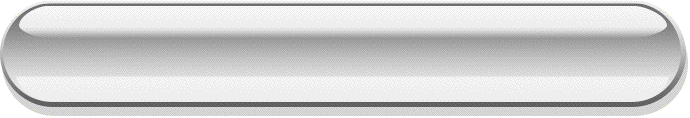

Page index / neconf
PowerPoint Presentation - Internet for Authentic Texts and Tasks

Lesson 3
•Search-identify-read-take notes-outline
•Determine your research interest
•Read and translate from Russian
•Outline in Russian the issue(s)
•Submit your list of sites, original texts, translation, and outline
| This week you
will select your own topic--it may be a theme (solid waste disposal problems,
for example) or an area (like the Chernobyl region) for an eventual research
project/report on an environmental issue of interest to you. |
|
| 1. Assignment:
Search-identify-read-take notes-outline (6 hrs) |
|
| Search either by
theme or word, use both English and Russian search engines. You might, for
example, search out information on global warming or Russian environmental
legislation, or on a geographical area, Lake Baikal, the cities of Moscow or
St. Petersburg, Chernobyl. If you have nothing specific in mind, read the
following articles or search these regions. |
|
| Determine your
specific research interest and then identify at least five sites/articles in
Russian devoted to that issue. Save and annotate the sites as you did in
Lesson one |
|
| Read and
translate from Russian into English the titles and the key thematic (first
and last) sentences. |
|
| Outline in
Russian the issue(s)/problem(s), the data/findings/arguments, and your
solution/conclusion. |
|
| Submit your list
of sites, original texts, translation, and outline as a Word or HTML document |
|
| That's way
too hard!! |
|
| Search and
identify five sites that are in both English and Russian. |
|
| Annotate them
based on the quality of the English language version. |
|
| Compare to and
describe the Russian language resources. |
|
| Are there direct
translations of key words and documents, or are they different? |
|
| (Don't be
reluctant to use a dictionary!) |
|
| Select and
prepare a topic for your own paper. Check the Glossary (Windows machines
only) |
|
| Use four English
language sources and one in Russian. |
|
| Outline in
English the issue(s)/problem(s), the data/findings/arguments, and your
solution/conclusion. |
|
| Submit your list
of sites, original texts, the translation of the title and first and last
sentences of each paragraph from your Russian text, and outline as a Word or
HTML document |
|